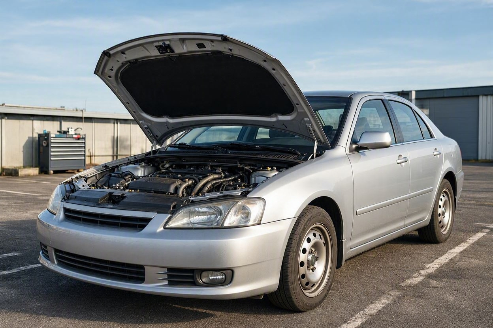
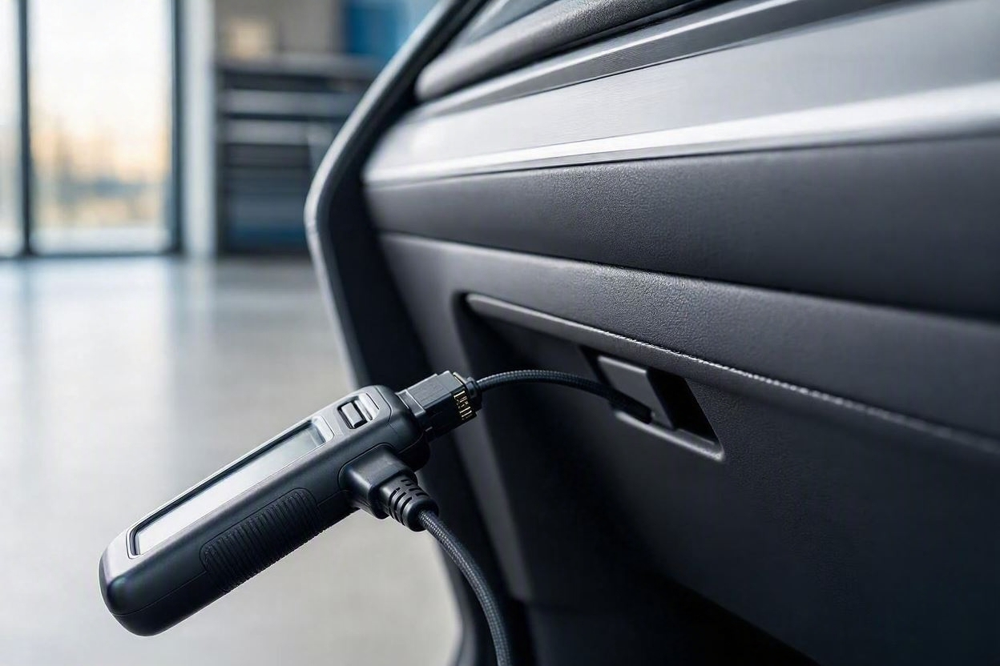

کارشناس خودرو معتبر را چطور انتخاب کنیم؟ ۱۰ معیار قبل از رزرو
فرض کنید سر یک خودروی دستدوم به توافق نزدیک شدهاید و میخواهید پیش از پرداخت، خیالتان راحت شود. یک نفر را برای کارشناسی میآورید، نیمساعت دور خودرو میچرخد، چند جمله میگوید و میرود. اما بعد معلوم میشود چیزی جا مانده است. مشکل معمولاً خودِ کارشناسی نیست، بلکه انتخاب کارشناسی است که بهاندازه کافی دقیق و بیطرف نبوده.
کارشناس خودرو معتبر کسی است که مستقل از فروشنده باشد، تجهیزات استاندارد مثل رنگسنج و دیاگ داشته باشد، گزارش کتبی و مستند بدهد، هزینه را شفاف اعلام کند و همه بخشها را پوشش دهد: فنی، بدنه، شاسی و دیاگ. سابقه واقعی، پاسخگویی بعد از بررسی و بیطرفی در معامله، مهمترین نشانههای اعتبار او هستند.
خلاصه در یک دقیقه
- استقلال کارشناس از فروشنده و بنگاه، پایه اعتماد است؛ کارشناسِ معرفیشده توسط فروشنده الزاماً بیطرف نیست.
- تجهیزات استاندارد یعنی رنگسنج، دیاگ و بالابر یا جک؛ بررسی فقط با چشم کافی نیست.
- گزارش کتبی و مستند مهمتر از توضیح شفاهی است، چون بعداً قابل استناد میماند.
- هزینه باید پیش از شروع شفاف باشد و کارشناسی نباید به خرید یا رد معامله وابسته شود.
- یک کارشناسی خوب همه بخشها را میبیند: فنی، بدنه، شاسی و دیاگ، نه فقط ظاهر خودرو.
چرا انتخاب کارشناس مهمتر از چیزی است که فکر میکنید؟
کارشناسی خودرو یک نتیجه ثابت نیست که هر کسی انجامش دهد به یک جواب برسید. کیفیت آن مستقیماً به دانش، ابزار و بیطرفی کارشناس بستگی دارد. دو نفر میتوانند یک خودرو را ببینند و گزارشهای متفاوتی بدهند. برای همین پیش از اینکه نگران خودِ خودرو باشید، باید بدانید چه کسی قرار است آن را بررسی کند. مجموعههایی مثل کارماچک روی همین نقطه تمرکز دارند: بررسی دقیق و مستقل بهجای یک نگاه سطحی.
راستش را بخواهید، بخش زیادی از نارضایتیهای بعد از خرید به کارشناسی ناقص برمیگردد، نه نبود کارشناسی. یعنی خریدار هزینه داده اما بررسی بهدرستی انجام نشده است. به همین دلیل معیارهای زیر کمک میکنند پیش از رزرو، انتخاب درستی داشته باشید.
۱۰ معیار انتخاب کارشناس خودرو معتبر
این معیارها ترتیب اهمیت مطلق ندارند، اما هر کدام یک نقطهضعف رایج را پوشش میدهند. هرچه تعداد بیشتری از آنها برقرار باشد، احتمال یک بررسی قابلاعتماد بالاتر میرود.

۱. استقلال از فروشنده و بنگاه
مهمترین معیار، بیطرفی است. کارشناسی که فروشنده معرفی میکند یا با بنگاه همکاری دارد، ممکن است ناخواسته یا خواسته سمت معامله را بگیرد. کارشناس معتبر مستقل عمل میکند و منافعش به انجامشدن یا نشدن معامله گره نخورده است.
۲. تجهیزات استاندارد و کامل
بررسی حرفهای بدون ابزار ممکن نیست. حداقل تجهیزات لازم شامل رنگسنج برای ضخامت رنگ بدنه، دستگاه دیاگ برای خطاهای الکترونیکی و جک یا بالابر برای دیدن زیر خودرو است. اگر کارشناسی فقط با چشم و دست بررسی میکند، بخش مهمی از خودرو دیده نمیشود.
۳. پوشش کامل بخشهای خودرو
یک کارشناسی کامل نباید فقط رنگ و بدنه را ببیند. بررسی باید فنی، بدنه، شاسی و دیاگ را با هم پوشش دهد. اگر میخواهید بدانید یک بررسی کامل دقیقاً شامل چه مواردی است، راهنمای بررسی کامل خودرو قبل از خرید تصویر روشنی میدهد.
۴. ارائه گزارش کتبی و مستند
توضیح شفاهی فراموش میشود و قابل استناد نیست. کارشناس معتبر یک گزارش کتبی و مرحلهبهمرحله میدهد که وضعیت هر بخش در آن مشخص است. این گزارش هم در تصمیمگیری و هم در چانهزنی به کار میآید.
۵. شفافیت هزینه پیش از شروع
هزینه کارشناسی باید قبل از کار مشخص باشد، نه بعد از آن. مبلغ نباید به نتیجه بررسی یا انجام معامله وابسته شود. اگر درباره اینکه پرداخت هزینه با کیست تردید دارید، مقاله هزینه کارشناسی خودرو با خریدار است یا فروشنده موضوع را روشن میکند.
۶. سابقه و تخصص واقعی
تجربه واقعی با تعداد بررسی و آشنایی با مدلهای رایج بازار ایران سنجیده میشود، نه فقط ادعا. کارشناسی که با ایرادهای شایع خودروهای داخلی و وارداتی آشناست، سریعتر و دقیقتر به نقاط حساس میرسد.
۷. امکان کارشناسی در محل
کارشناسی در محلِ خودرو، هم برای شما راحتتر است و هم نشان میدهد کارشناس به تجهیزات سیار مجهز است. این ویژگی بهویژه وقتی مهم است که فروشنده تمایلی به جابهجایی خودرو ندارد.
۸. پاسخگویی و مسئولیتپذیری بعد از بررسی
کار معتبر با تحویل گزارش تمام نمیشود. کارشناس یا مجموعه باید بعد از بررسی هم پاسخگوی سؤالها باشد و پشت گزارشش بایستد. نبودِ راه ارتباطی روشن، یک هشدار است.
۹. تفکیک کارشناسی از قیمتگذاری
کارشناسی فنی و قیمتگذاری دو کار متفاوتاند. کارشناس معتبر وضعیت خودرو را بیطرف گزارش میکند و برآورد ارزش را جدا از آن نگه میدارد. این تفکیک باعث میشود گزارش سلامت خودرو تحتتأثیر قیمت پیشنهادی قرار نگیرد.
۱۰. اعتبار مجموعه و بازخورد واقعی مشتریان
یک مجموعه شناختهشده با فرایند مشخص، معمولاً قابلاعتمادتر از یک بررسی موردی و بینامونشان است. بازخورد واقعی مشتریان قبلی، وجود قرارداد یا فاکتور رسمی و شفافیت در معرفی خدمات، همگی نشانه اعتبارند.
پیش از معامله، بررسی را به دست فرد درست بسپارید
اگر میخواهید کارشناسی دقیق و مستقل روی همه بخشهای خودرو انجام شود، بررسی تخصصی میتواند ابهامهای معامله را کمتر کند.
شروع کارشناسی خودروجدول جمعبندی معیارها
| معیار | چرا مهم است | اهمیت |
|---|---|---|
| استقلال از فروشنده | پایه بیطرفی گزارش | بسیار مهم |
| تجهیزات استاندارد | بدون ابزار، بررسی ناقص است | بسیار مهم |
| پوشش کامل بخشها | فنی، بدنه، شاسی و دیاگ با هم | بسیار مهم |
| گزارش کتبی | قابل استناد و پیگیری | مهم |
| شفافیت هزینه | جلوگیری از سوگیری در نتیجه | مهم |
| پاسخگویی بعد از بررسی | نشانه مسئولیتپذیری | متوسط تا مهم |
قبل از رزرو چه سؤالهایی بپرسیم؟
چند سؤال ساده پیش از رزرو، بیشتر از هر تبلیغی درباره اعتبار کارشناس به شما میگوید. این مسیر کوتاه کمک میکند تصمیم بهتری بگیرید:
- مرحله اول:بپرسید بررسی شامل چه بخشهایی است و آیا شاسی و دیاگ هم دیده میشود.
- مرحله دوم:بپرسید چه تجهیزاتی استفاده میشود، بهویژه رنگسنج و دستگاه دیاگ.
- مرحله سوم:هزینه دقیق و شرایط آن را قبل از شروع مشخص کنید.
- مرحله چهارم:بپرسید گزارش کتبی داده میشود و به چه شکلی تحویل میگیرید.
- مرحله پنجم:مطمئن شوید کارشناس مستقل است و ارتباطی با فروشنده ندارد.
کارماچک فقط ایراد خودرو را شناسایی نمیکند؛ اثر آن روی هزینه تعمیر و ارزش واقعی معامله را هم مشخص میکند. همین نگاه باعث میشود گزارش کارشناسی به یک تصمیم عملی تبدیل شود، نه فهرستی از اصطلاحات فنی.
اشتباههای رایج هنگام انتخاب کارشناس
- اعتماد به کارشناسی که فروشنده معرفی کرده، بدون بررسی استقلال او.
- انتخاب صرفاً بر اساس ارزانترین قیمت، بدون توجه به کیفیت و پوشش بررسی.
- قناعت به توضیح شفاهی و نگرفتن گزارش کتبی.
- بیتوجهی به تجهیزات؛ بررسی فقط چشمی برای تشخیص رنگ و شاسی کافی نیست.
- عجله در رزرو بدون پرسیدن سؤالهای ساده درباره فرایند کار.
بعد از انتخاب کارشناس درست، مهارت بعدی خواندن درست گزارش است. برای اینکه بدانید کدام ایراد جدی است و کدام قابل چشمپوشی، راهنمای خواندن گزارش کارشناسی خودرو کمککننده است.
جمعبندی
انتخاب کارشناس خودرو معتبر، نیمی از یک کارشناسی موفق است. مهمترین معیارها استقلال از فروشنده، تجهیزات استاندارد، پوشش کامل بخشها و گزارش کتبی هستند و شفافیت هزینه و پاسخگویی بعد از بررسی آنها را کامل میکنند. هیچ معیاری بهتنهایی کافی نیست، اما وقتی کنار هم قرار بگیرند، احتمال یک بررسی قابلاعتماد بالا میرود. پیش از رزرو چند سؤال ساده بپرسید؛ همین کار کوچک میتواند تفاوت یک معامله مطمئن و یک پشیمانی را بسازد.
با انتخاب درست، مطمئنتر معامله کنید
اگر میخواهید بررسی فنی، بدنه و شاسی خودرو بهصورت مستقل و مستند انجام شود، میتوانید رزرو کارشناسی را ثبت کنید تا همه بخشها با هم بررسی شوند.
ثبت درخواست کارشناسیسؤالات متداول
مهمترین معیار انتخاب کارشناس خودرو چیست؟
استقلال کارشناس از فروشنده مهمترین معیار است. کارشناسی که منافعش به انجامشدن معامله وابسته نباشد، گزارش بیطرفتری میدهد. بعد از استقلال، داشتن تجهیزات استاندارد مثل رنگسنج و دیاگ و ارائه گزارش کتبی، بیشترین اهمیت را دارند. این سه مورد پایه یک کارشناسی قابلاعتماد هستند.
آیا کارشناسِ معرفیشده توسط فروشنده قابلاعتماد است؟
لزوماً نه. وقتی فروشنده کارشناس را معرفی میکند، احتمال سوگیری وجود دارد، حتی اگر ناخواسته باشد. بهتر است خودتان کارشناس مستقل انتخاب کنید یا دستکم درباره ارتباط او با فروشنده مطمئن شوید. بیطرفی کارشناس، پایه اعتماد به گزارش اوست.
چه تجهیزاتی نشانه یک کارشناسی حرفهای است؟
حداقل تجهیزات شامل رنگسنج برای سنجش ضخامت رنگ بدنه، دستگاه دیاگ برای خواندن خطاهای الکترونیکی و جک یا بالابر برای بررسی زیر خودرو است. بررسی فقط با چشم و دست، بخش مهمی از خودرو مثل شاسی و خطاهای پنهان را از قلم میاندازد. نبود این ابزارها یعنی بررسی ناقص خواهد بود.
گزارش شفاهی بهجای گزارش کتبی کافی است؟
کافی نیست. گزارش شفاهی فراموش میشود و قابل استناد نیست. کارشناس معتبر یک گزارش کتبی و مرحلهبهمرحله میدهد که وضعیت هر بخش در آن ثبت شده باشد. این گزارش هم برای تصمیمگیری و هم برای چانهزنی روی قیمت به کار میآید و میتواند بعداً مرجع شما باشد.
هزینه کارشناسی باید قبل یا بعد از بررسی مشخص شود؟
قبل از شروع. هزینه باید شفاف و مستقل از نتیجه بررسی اعلام شود. اگر مبلغ به انجامشدن معامله یا سالم بودن خودرو گره بخورد، بیطرفی کارشناسی زیر سؤال میرود. شفافیت هزینه پیش از کار، یکی از نشانههای ساده اما مهم اعتبار است.
آیا کارشناسی ارزانتر همیشه بهصرفه است؟
نه همیشه. قیمت پایین اگر همراه با بررسی ناقص یا نبود تجهیزات باشد، در عمل گران تمام میشود. یک ایراد نادیدهگرفتهشده میتواند هزینهای بسیار بیشتر از تفاوت قیمت کارشناسی ایجاد کند. بهجای ارزانترین گزینه، دنبال کاملترین و مستقلترین بررسی باشید.